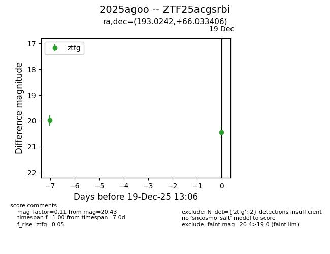
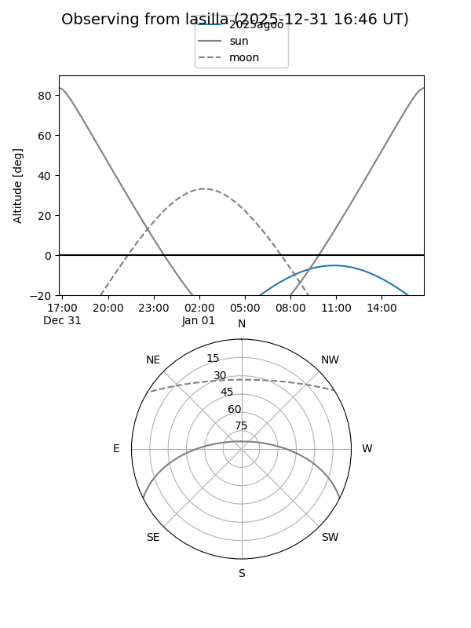
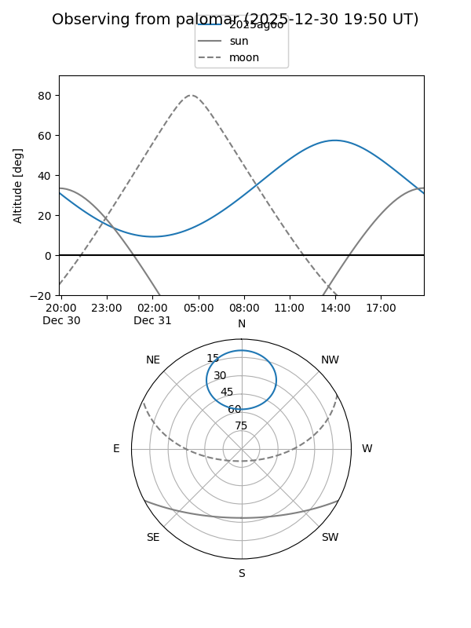

2025agoo
Target 2025agoo at 2025-12-18 11:18
Aliases and brokers:
FINK: fink-portal.org/ZTF25acgsrbi
Lasair: lasair-ztf.lsst.ac.uk/objects/ZTF25acgsrbi
ALeRCE: alerce.online/object/ZTF25acgsrbi
TNS: wis-tns.org/object/2025agoo
YSE: ziggy.ucolick.org/yse/transient_detail/2025agoo
alt names
ZTF25acgsrbi (ztf,fink_ztf)
2025agoo (tns,yse)
Coordinates:
equatorial (ra, dec) = 193.0242,+66.03341
equatorial (HMS+DMS) = 12:52:05.80,+66:02:00.26
galactic (l, b) = (122.8254,+51.09471)
Photometry
last ztfg=19.99
1 ztfg detections
Lightcurve

Visibility


Additional plots